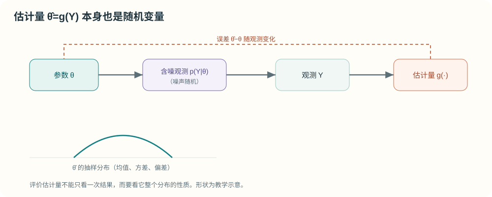
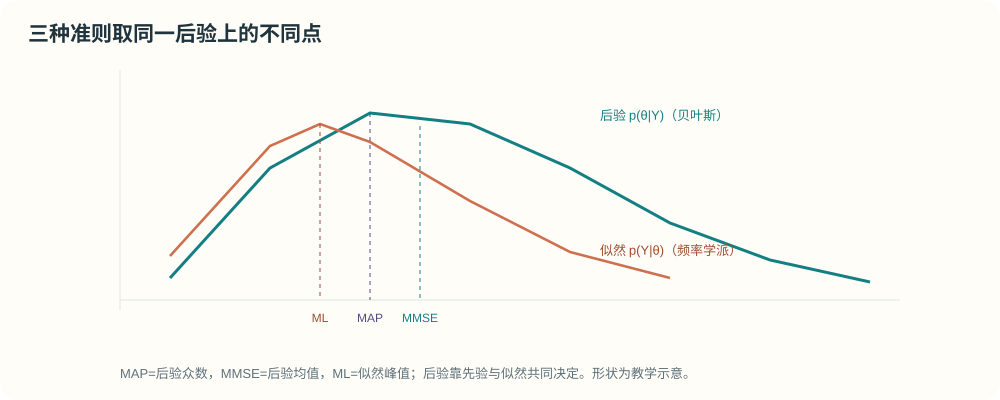
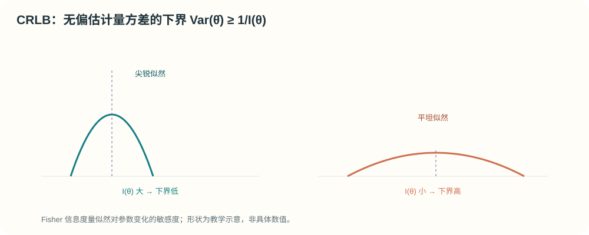
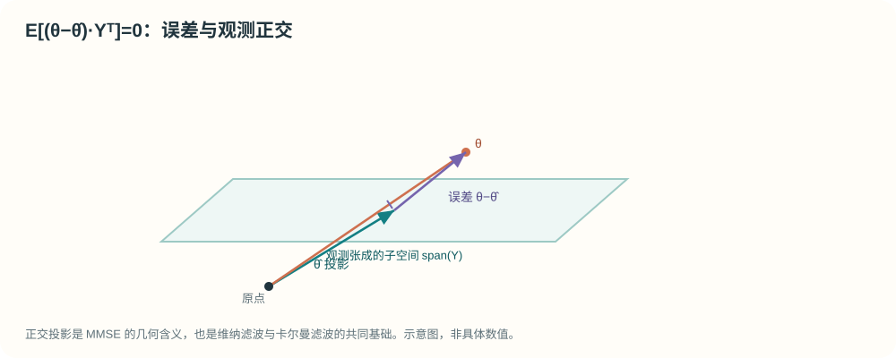

CHAPTER 20 · 统计推断与应用
估计理论基础
从一个含噪观测里提取未知参数，本质上是在定义一个随机变量——估计量。好的估计不保证每次都对，而是在偏差、方差、一致性上长期最优；MMSE、MAP、ML 分别对应后验均值、后验众数与似然峰值。
- 写出估计问题的三要素，并说明估计量为何是随机变量
- 区分 MMSE、MAP、ML 的目标与先验需求，写出 MMSE=E[θ|Y]
- 解释无偏、一致、有效与 Cramér-Rao 下界，以及正交性原理
估计问题的三要素
任何估计问题都可抽象为三个要素：待估参数 θ（无法直接观测的量，可以是标量、向量或函数）；观测数据 Y（受噪声污染的随机向量）；以及估计量 θ̂=g(Y)，一个从观测到参数的映射。
关键认识：估计量本身是随机变量。因为 Y 随机，作为 Y 的函数 θ̂ 也随机。换一批数据就会得到一个不同的估计值。所以评价估计量不能只看一次结果，而要看它整个抽样分布的性质：均值（偏差）、方差（稳定性）、以及随样本量增大是否收敛到真值。

三种经典准则
MMSE（最小均方误差）最小化 E[(θ−θ̂)²]，其解是条件期望：
在联合高斯下，条件期望退化为线性形式，这正是线性 MMSE，也是维纳/卡尔曼滤波的基础：
MAP（最大后验）取后验众数：θ̂MAP=argmaxθ p(θ|Y)=argmaxθ p(Y|θ)p(θ)。ML（最大似然）取似然峰值：θ̂ML=argmaxθ p(Y|θ)，不需要先验，具有大样本下的一致、渐近有效、渐近高斯等性质。
| 准则 | 目标 | 需要先验 | 结果 |
|---|---|---|---|
| MMSE | min E[(θ̂−θ)²] | 是 | E[θ|Y]（条件期望） |
| MAP | max p(θ|Y) | 是 | 后验众数 |
| ML | max p(Y|θ) | 否 | 似然峰值 |

对称单峰时：后验对称且单峰时 MAP 与 MMSE 重合；后验右偏时（如图 20.2）均值在众数右侧，二者不同。
估计量的质量评价
无偏性：若 E[θ̂]=θ 对所有 θ 成立，则称无偏；否则偏差 bias(θ̂)=E[θ̂]−θ。例如样本方差用分母 n−1 修正后才无偏（用 n 会系统性低估）。
一致性：若样本量 N→∞ 时 θ̂N 依概率收敛到 θ，则称一致。一个方差无限大的无偏估计量在实践中无用（增加数据不会改善精度）；反之有偏但偏差随 N 消失的估计量完全可以接受。
有效性：无偏估计量的方差不可能任意小，其下界由 Cramér-Rao 下界给出：
Fisher 信息 I(θ) 度量似然对参数变化的敏感度。达到下界的估计量称为有效；高斯噪声模型下 ML 通常是有效的。

正交性原理
MMSE（及线性 MMSE）的充要条件是：估计误差与观测正交（不相关）：
几何上，θ̂ 是 θ 在“观测张成的子空间”上的正交投影，误差垂直于该子空间。这正是图 20.4 的几何图像，也是维纳滤波（第 21 章）与卡尔曼滤波（第 22 章）的共同基础。

可复现核查
下面用蒙特卡罗验证：联合高斯下线性 MMSE 的增益就是相关系数且误差与观测正交；用 n−1 的样本方差无偏（均值为真方差）；高斯均值估计的方差下界为 σ²/n。纯 Python，固定种子。
import random, math
random.seed(20)
rho, N = 0.6, 200000 # theta~N(0,1), Corr(theta,Y)=rho
s_ty = s_yy = s_orth = 0.0
for _ in range(N):
z1, z2 = random.gauss(0, 1), random.gauss(0, 1)
th = z1
y = rho * z1 + math.sqrt(1 - rho * rho) * z2
s_ty += th * y; s_yy += y * y; s_orth += (th - rho * y) * y
assert abs(s_ty / s_yy - rho) < 0.01 # LMMSE 增益 = rho
assert abs(s_orth / N) < 0.01 # 误差与 Y 正交
trials, n = 20000, 5 # 无偏样本方差
acc = 0.0
for _ in range(trials):
v = [random.gauss(0, 1) for _ in range(n)]
xb = sum(v) / n
acc += sum((x - xb) ** 2 for x in v) / (n - 1)
assert abs(acc / trials - 1.0) < 0.02 # E[s^2] = sigma^2 = 1
assert abs(4.0 / 25 - 0.16) < 1e-12 # CRLB: sigma^2/n
检查点：实测增益≈0.600、正交内积≈9×10⁻⁵、无偏方差均值≈1.003，与 (20.2)(20.4) 及无偏性定义一致。测试文件 examples/test_chapter_20.py 复用同一构造。
边界与陷阱
- ML 的优良性质是大样本性质。小样本下 ML 可能有显著偏差，尤其当参数靠近边界或数据稀少时；“渐近无偏/有效”不能在有限样本兑现。可用偏差校正、Bootstrap 或贝叶斯先验补救。
- MMSE 需要完整后验。当后验难以积分时，条件均值可能不可得；MAP 只需优化，代价是丢失不确定性信息。
- 线性 MMSE 不是“万能最优”。它只利用二阶矩，只有在联合高斯下才等于真正的 MMSE；非高斯时它只是“最优线性”估计。
- 无偏不等于最好。一个略有偏差但方差小得多的估计量，总均方误差 MSE=bias²+Var 可能更小——这就是偏差-方差权衡。
- CRLB 有适用条件。它适用于无偏估计，且需正则条件成立（可在积分号下求导）；有偏估计的方差可低于 CRLB。
下一章将把 MMSE（正交性原理）落实到平稳信号：维纳滤波。
参考与核查依据
- MMSE estimator（关系 E[θ|Y] 与线性 MMSE）：一页汇总常用公式，正文结论与之保持一致。
- S. M. Kay, Fundamentals of Statistical Signal Processing: Estimation Theory, Prentice Hall, 1993：MMSE/MAP/ML、CRLB 与正交性原理（第 2、3 章）。
- H. V. Poor, An Introduction to Signal Detection and Estimation, 2nd ed., Springer, 1994：正交性原理与估计量评价。
- MIT OpenCourseWare · Principles of Digital Communications I：估计与检测的基础背景。
- ProbabilityCourse · Bias and Variance：偏差、方差与均方误差。